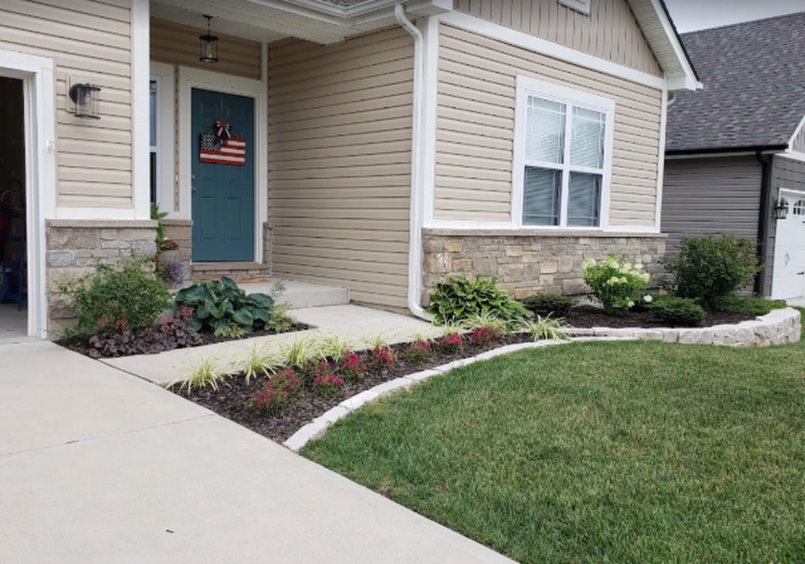
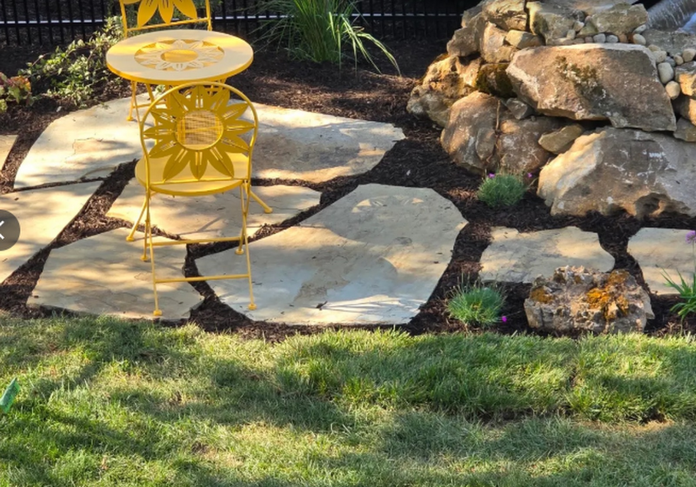
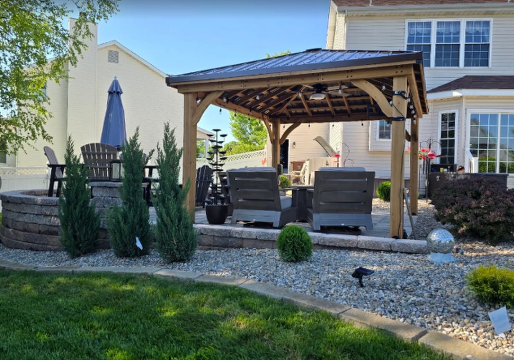

Landscape Design
Outdoor spaces designed to work as hard as the Central Coast does.
Every great landscape starts with a plan. Our design process takes into account your property's layout, climate, and how you actually want to use the space — whether that's a low-maintenance front yard, an entertaining area built for warm Santa Maria evenings, or a full property transformation. We walk the site with you first, so the plan we hand you is built around how your yard actually sits, not a generic template.

From Concept to Detailed Plans
We handle everything from initial concept to detailed design plans, including drought-tolerant planting layouts, hardscape placement, irrigation zones, and lighting. Each plan lays out exactly which materials we're using and where every feature goes, so you can see the finished space before any of it is built.

Know Before We Break Ground
You'll know exactly what you're getting before we break ground. That means a clear plan and a real quote in hand — not a verbal estimate — so there are no surprises once construction starts.

Water-Wise, Low-Maintenance Choices
Central Coast summers are long and dry, so every design leans on drought-tolerant plants grouped by water need, with irrigation zoned to match. The result is a landscape that holds its color through the dry months without running up your water bill or demanding a weekend of upkeep every week.